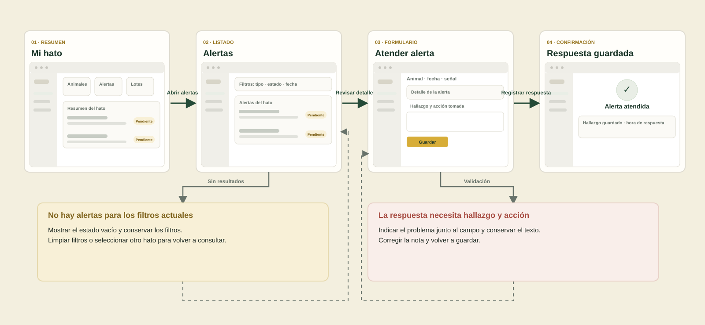
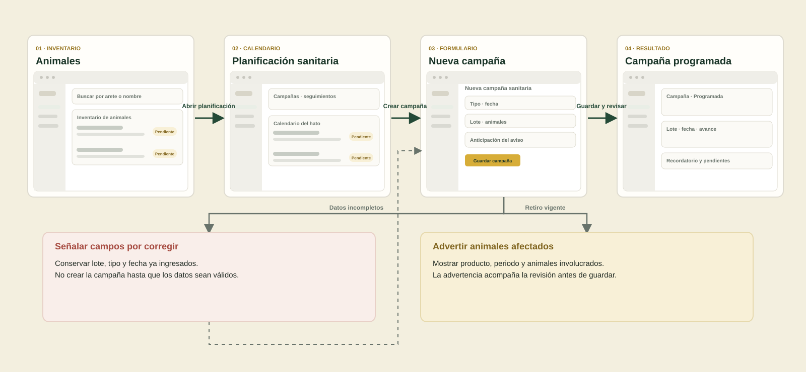
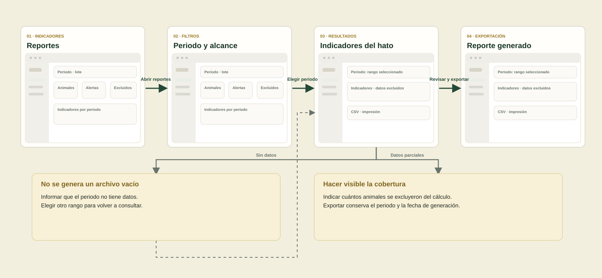
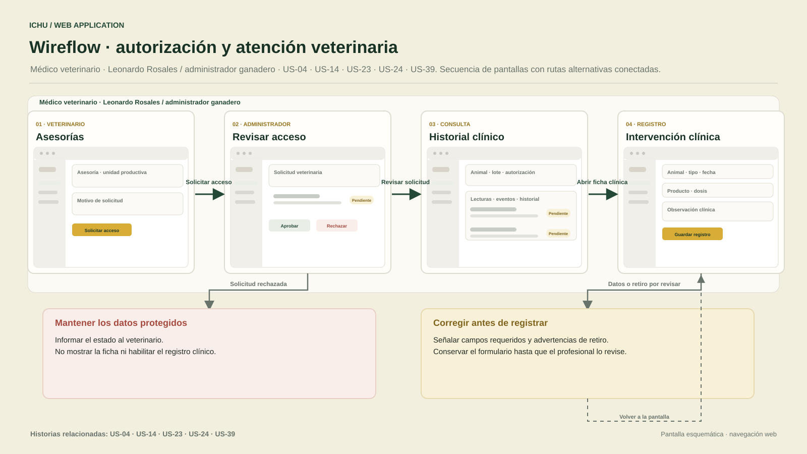
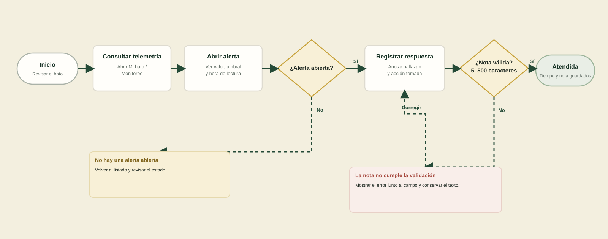
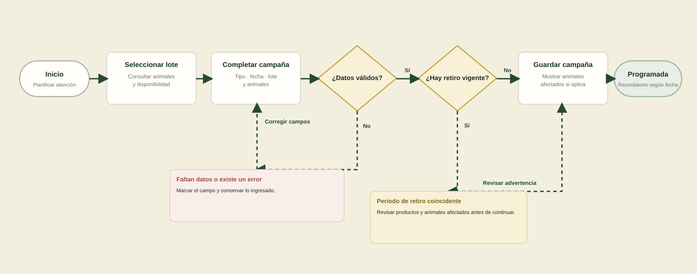
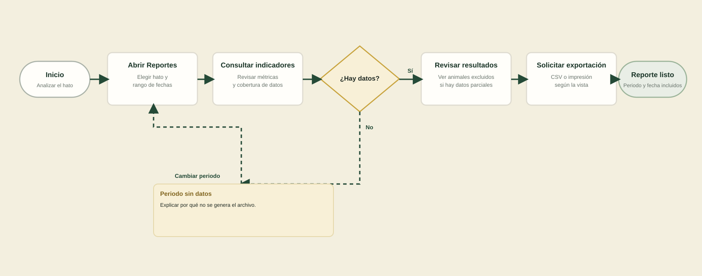
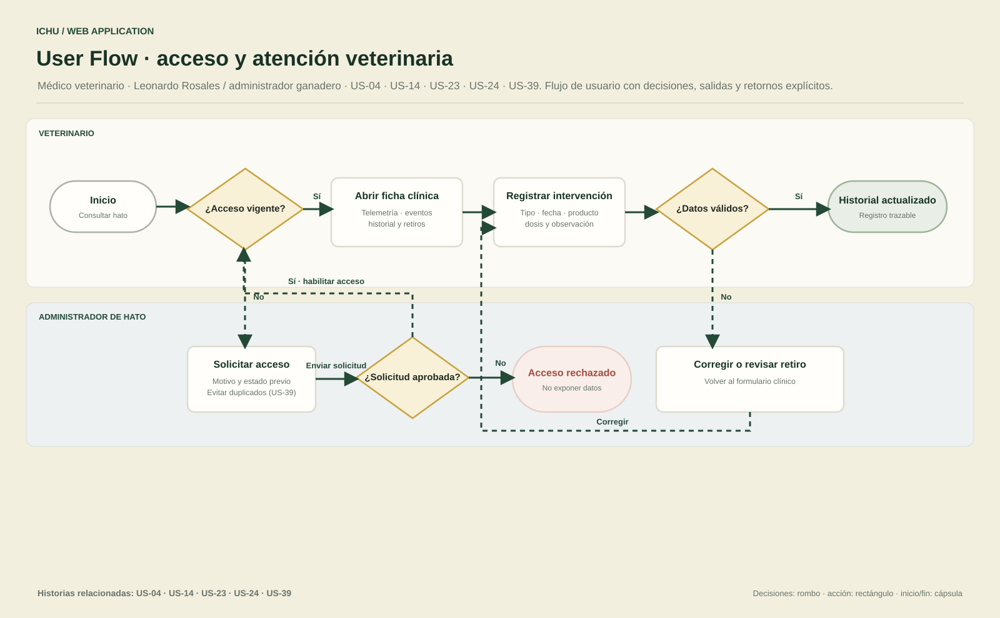

ICHU · Chapter V
Wireflows connect screen sketches and interactions. User flows show decisions, outcomes and return paths.
5.4.2 · Wireflows

Alert response · US-13, US-16, US-19

Health campaign · US-07, US-26, US-27

Herd report · US-29, US-31

Veterinary care · US-04, US-14, US-23, US-24, US-39
5.4.4 · User flows

Alert response · US-13, US-16, US-19

Health campaign · US-07, US-26, US-27

Herd report · US-29, US-31

Veterinary care · US-04, US-14, US-23, US-24, US-39